R/gl.pcoa.plot.r
gl.pcoa.plot.RdThis script takes output from the ordination generated by gl.pcoa() and plots the individuals classified by population.
gl.pcoa.plot(
glPca,
x,
scale = FALSE,
ellipse = FALSE,
plevel = 0.95,
pop.labels = "pop",
interactive = FALSE,
as.pop = NULL,
hadjust = 1.5,
vadjust = 1,
xaxis = 1,
yaxis = 2,
zaxis = NULL,
pt.size = 2,
pt.colors = NULL,
pt.shapes = NULL,
label.size = 1,
axis.label.size = 1.5,
save2tmp = FALSE,
verbose = NULL
)Name of the PCA or PCoA object containing the factor scores and eigenvalues [required].
Name of the genlight object or fd object containing the SNP genotypes or Tag P/A (SilicoDArT) genotypes or the Distance Matrix used to generate the ordination [required].
If TRUE, scale the x and y axes in proportion to % variation explained [default FALSE].
If TRUE, display ellipses to encapsulate points for each population [default FALSE].
Value of the percentile for the ellipse to encapsulate points for each population [default 0.95].
How labels will be added to the plot ['none'|'pop'|'legend', default = 'pop'].
If TRUE then the populations are plotted without labels, mouse-over to identify points [default FALSE].
Assign another metric to represent populations for the plot [default NULL].
Horizontal adjustment of label position in 2D plots [default 1.5].
Vertical adjustment of label position in 2D plots [default 1].
Identify the x axis from those available in the ordination (xaxis <= nfactors) [default 1].
Identify the y axis from those available in the ordination (yaxis <= nfactors) [default 2].
Identify the z axis from those available in the ordination for a 3D plot (zaxis <= nfactors) [default NULL].
Specify the size of the displayed points [default 2].
Optionally provide a vector of nPop colors (run gl.select.colors() for color options) [default NULL].
Optionally provide a vector of nPop shapes (run gl.select.shapes() for shape options) [default NULL].
Specify the size of the point labels [default 1].
Specify the size of the displayed axis labels [default 1.5].
If TRUE, saves any ggplots and listings to the session temporary directory (tempdir) [default FALSE].
Verbosity: 0, silent or fatal errors; 1, begin and end; 2, progress log; 3, progress and results summary; 5, full report [default 2 or as specified using gl.set.verbosity].
returns no value (i.e. NULL)
The factor scores are taken from the output of gl.pcoa() and the population assignments are taken from from the original data file. In the bivariate plots, the specimens are shown optionally with adjacent labels and enclosing ellipses. Population labels on the plot are shuffled so as not to overlap (using package {directlabels}). This can be a bit clunky, as the labels may be some distance from the points to which they refer, but it provides the opportunity for moving labels around using graphics software (e.g. Adobe Illustrator).
3D plotting is activated by specifying a zaxis.
Any pair or trio of axes can be specified from the ordination, provided they are within the range of the nfactors value provided to gl.pcoa(). In the 2D plots, axes can be scaled to represent the proportion of variation explained. In any case, the proportion of variation explained by each axis is provided in the axis label.
Colors and shapes of the points can be altered by passing a vector of shapes and/or a vector of colors. These vectors can be created with gl.select.shapes() and gl.select.colors() and passed to this script using the pt.shapes and pt.colors parameters.
Points displayed in the ordination can be identified if the option interactive=TRUE is chosen, in which case the resultant plot is ggplotly() friendly. Identification of points is by moving the mouse over them. Refer to the plotly package for further information. The interactive option is automatically enabled for 3D plotting.
Other Exploration/visualisation functions:
gl.select.colors(),
gl.select.shapes(),
gl.smearplot()
# \donttest{
# SET UP DATASET
gl <- testset.gl
levels(pop(gl))<-c(rep('Coast',5),rep('Cooper',3),rep('Coast',5),
rep('MDB',8),rep('Coast',7),'Em.subglobosa','Em.victoriae')
# RUN PCA
pca<-gl.pcoa(gl,nfactors=5)
#> Starting gl.pcoa
#> Processing genlight object with SNP data
#> Warning: Number of loci is less than the number of individuals to be represented
#> Performing a PCA, individuals as entities, loci as attributes, SNP genotype as state
#>
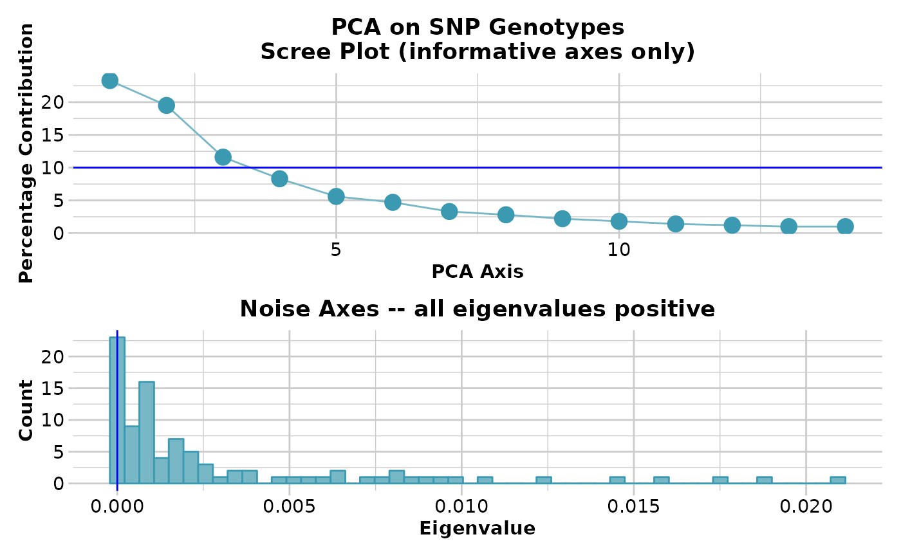
#> Completed: gl.pcoa
#>
# VARIOUS EXAMPLES
gl.pcoa.plot(pca, gl, ellipse=TRUE, plevel=0.95, pop.labels='pop',
axis.label.size=1, hadjust=1.5,vadjust=1)
#> Starting gl.pcoa.plot
#> Processing an ordination file (glPca)
#> Processing genlight object with SNP data
#> Plotting populations in a space defined by the SNPs
#> Preparing plot .... please wait
#>
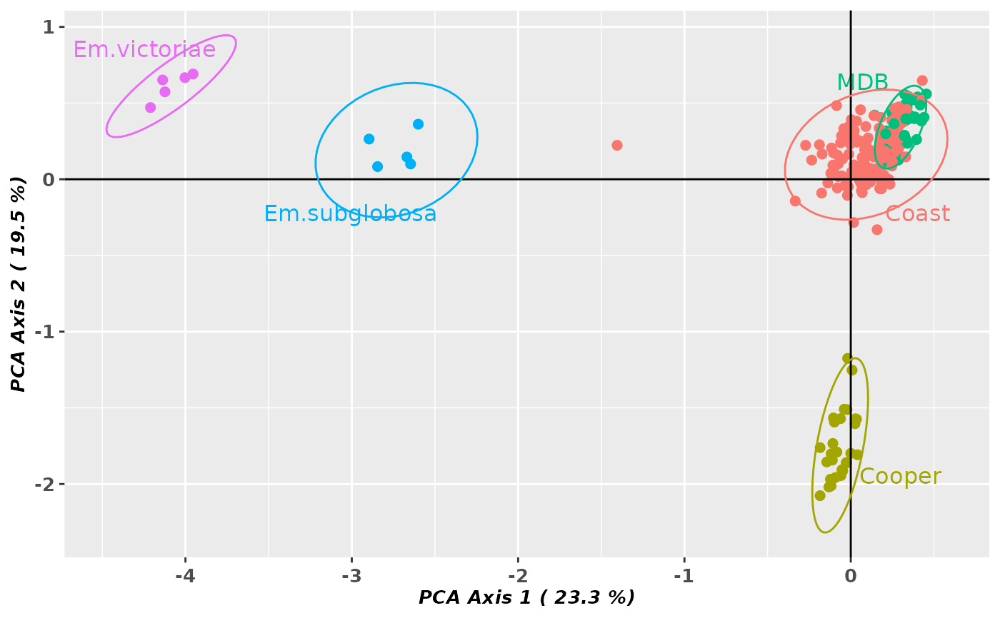
#> Completed: gl.pcoa.plot
#>
gl.pcoa.plot(pca, gl, ellipse=TRUE, plevel=0.99, pop.labels='legend',
axis.label.size=1)
#> Starting gl.pcoa.plot
#> Processing an ordination file (glPca)
#> Processing genlight object with SNP data
#> Plotting populations identified by a legend
#> Preparing plot .... please wait
#>
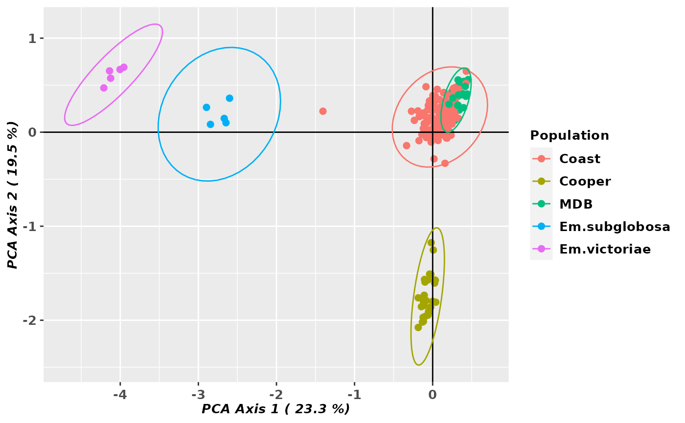
#> Completed: gl.pcoa.plot
#>
gl.pcoa.plot(pca, gl, ellipse=TRUE, plevel=0.99, pop.labels='legend',
axis.label.size=1.5,scale=TRUE)
#> Starting gl.pcoa.plot
#> Processing an ordination file (glPca)
#> Processing genlight object with SNP data
#> Plotting populations identified by a legend
#> Preparing plot .... please wait
#>
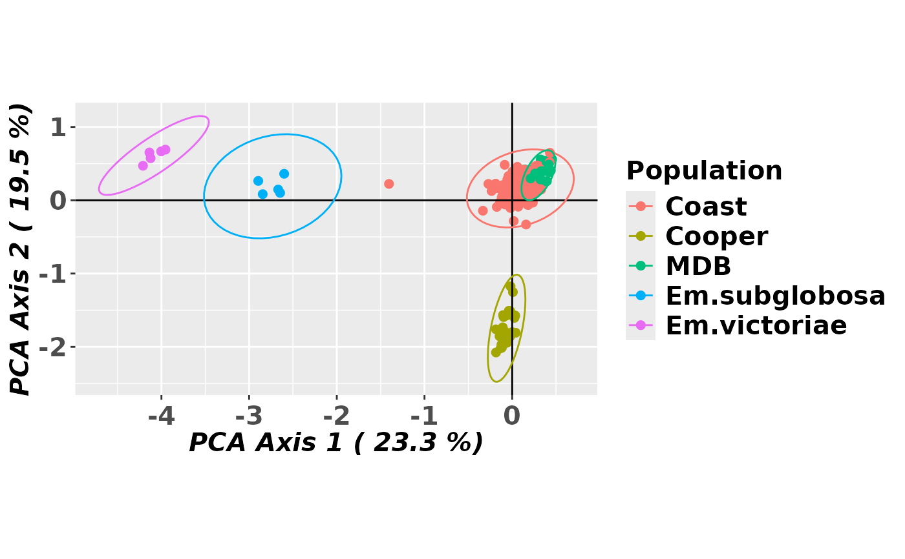
#> Completed: gl.pcoa.plot
#>
gl.pcoa.plot(pca, gl, ellipse=TRUE, axis.label.size=1.2, xaxis=1, yaxis=3,
scale=TRUE)
#> Starting gl.pcoa.plot
#> Processing an ordination file (glPca)
#> Processing genlight object with SNP data
#> Plotting populations in a space defined by the SNPs
#> Preparing plot .... please wait
#>
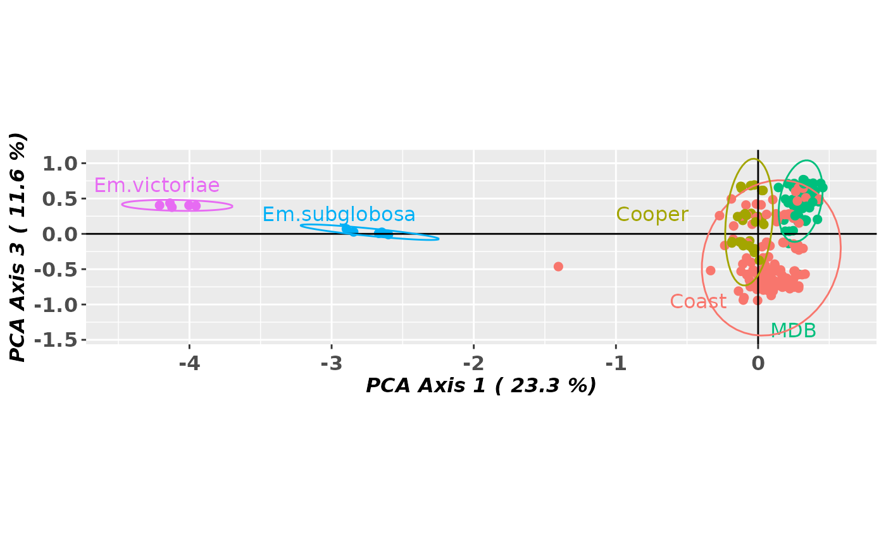
#> Completed: gl.pcoa.plot
#>
gl.pcoa.plot(pca, gl, pop.labels='none',scale=TRUE)
#> Starting gl.pcoa.plot
#> Processing an ordination file (glPca)
#> Processing genlight object with SNP data
#> Plotting points with no labels
#> Preparing plot .... please wait
#>
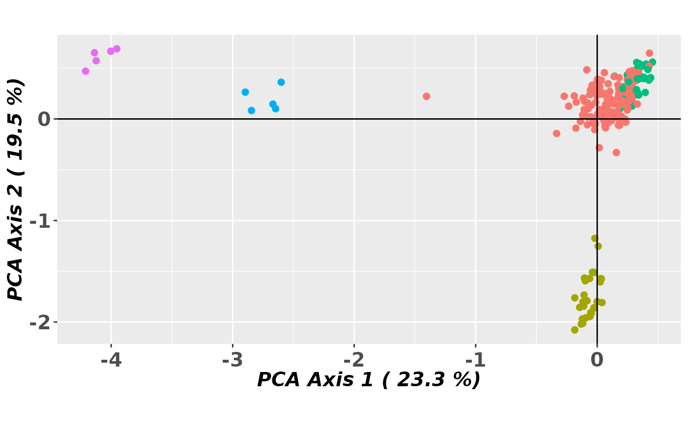
#> Completed: gl.pcoa.plot
#>
gl.pcoa.plot(pca, gl, axis.label.size=1.2, interactive=TRUE)
#> Starting gl.pcoa.plot
#> Processing an ordination file (glPca)
#> Processing genlight object with SNP data
#> Plotting populations in a space defined by the SNPs
#> Displaying an interactive plot
#> NOTE: Returning the ordination scores, not a ggplot2 compatable object
#> Ignore any warning on the number of shape categories
#> Preparing plot .... please wait
#> Completed: gl.pcoa.plot
#>
gl.pcoa.plot(pca, gl, ellipse=TRUE, plevel=0.99, xaxis=1, yaxis=2, zaxis=3)
#> Starting gl.pcoa.plot
#> Processing an ordination file (glPca)
#> Processing genlight object with SNP data
#> Displaying a three dimensional plot, mouse over for details for each point
#> May need to zoom out to place 3D plot within bounds
#> Completed: gl.pcoa.plot
#>
# color AND SHAPE ADJUSTMENTS
shp <- gl.select.shapes(select=c(16,17,17,0,2))
#> Starting gl.select.shapes
#>
#> Displaying and returning shapes 16, 17, 17, 0, 2
#> Completed: gl.select.shapes
#>
col <- gl.select.colors(library='brewer',palette='Spectral',ncolors=11,
select=c(1,9,3,11,11))
#> Starting gl.select.colors
#> Library: RColorBrewer
#> Palette: brewer.pal
#> Showing and returning 5 of 11 colors for library RColorBrewer : palette Spectral
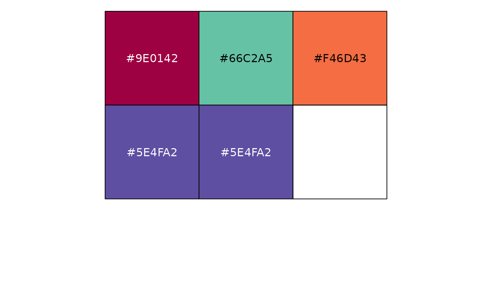
#> Completed: gl.select.colors
#>
gl.pcoa.plot(pca, gl, ellipse=TRUE, plevel=0.95, pop.labels='pop',
pt.colors=col, pt.shapes=shp, axis.label.size=1, hadjust=1.5,vadjust=1)
#> Starting gl.pcoa.plot
#> Processing an ordination file (glPca)
#> Processing genlight object with SNP data
#> Plotting populations in a space defined by the SNPs
#> Preparing plot .... please wait
#>
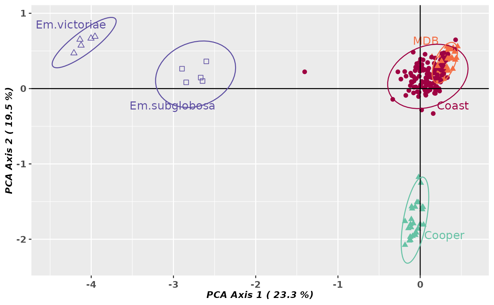
#> Completed: gl.pcoa.plot
#>
gl.pcoa.plot(pca, gl, ellipse=TRUE, plevel=0.99, pop.labels='legend',
pt.colors=col, pt.shapes=shp, axis.label.size=1)
#> Starting gl.pcoa.plot
#> Processing an ordination file (glPca)
#> Processing genlight object with SNP data
#> Plotting populations identified by a legend
#> Preparing plot .... please wait
#>
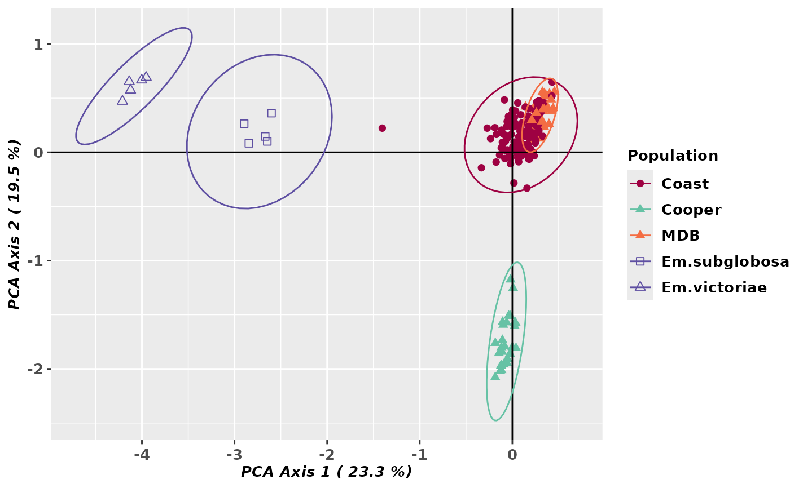
#> Completed: gl.pcoa.plot
#>
# }
test <- gl.pcoa(platypus.gl)
#> Starting gl.pcoa
#> Processing genlight object with SNP data
#> Warning: data include loci that are scored NA across all individuals.
#> Consider filtering using gl <- gl.filter.allna(gl)
#> Performing a PCA, individuals as entities, loci as attributes, SNP genotype as state
#>
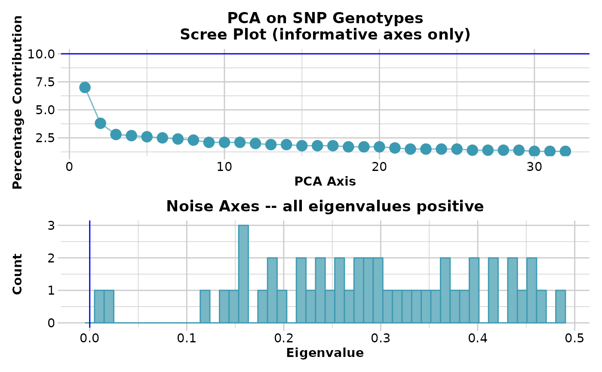
#> Completed: gl.pcoa
#>
gl.pcoa.plot(glPca = test, x = platypus.gl)
#> Starting gl.pcoa.plot
#> Processing an ordination file (glPca)
#> Processing genlight object with SNP data
#> Warning: data include loci that are scored NA across all individuals.
#> Consider filtering using gl <- gl.filter.allna(gl)
#> Plotting populations in a space defined by the SNPs
#> Preparing plot .... please wait
#>
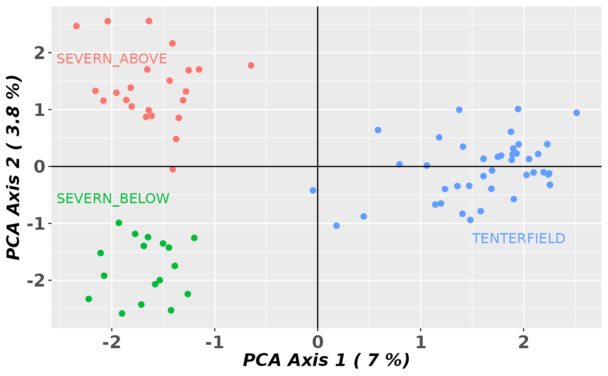
#> Completed: gl.pcoa.plot
#>